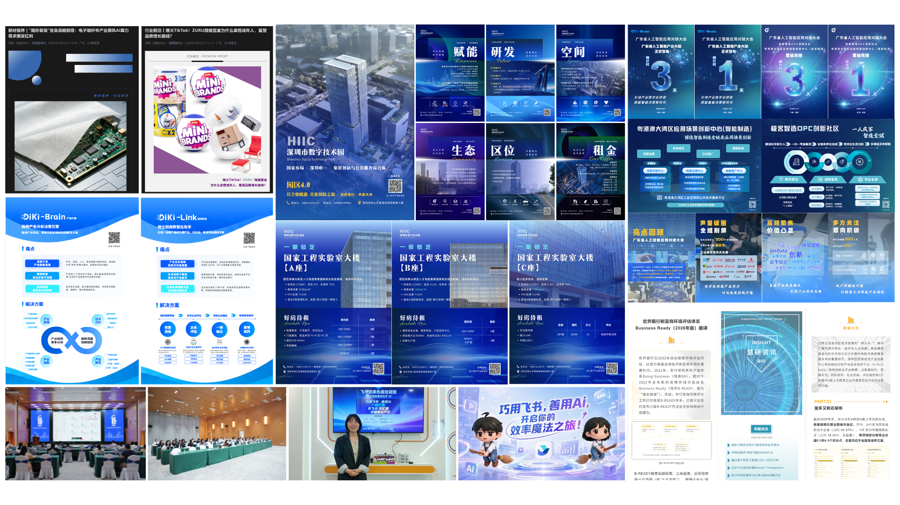
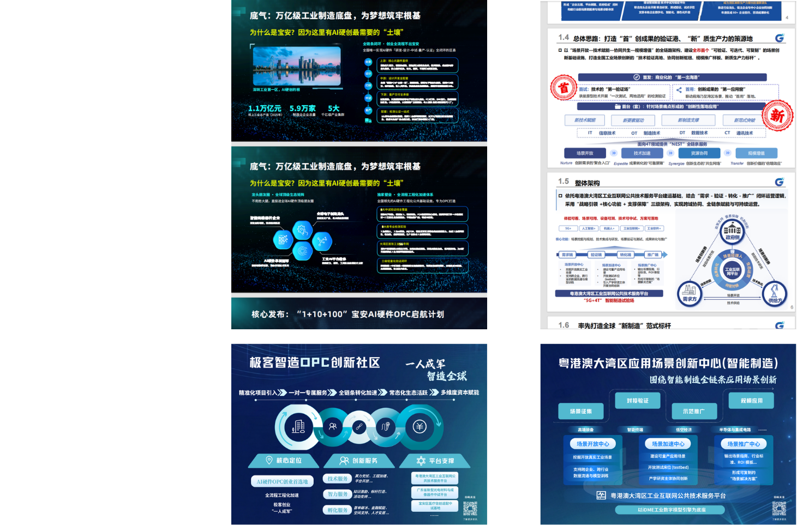

XUEMENG
ABOUT ME
教育信息
- 香港理工大学-硕士 创意媒体娱乐 2024.09-2025.10 主修方向：新媒体媒介
- 中国传媒大学-本科 数字媒体艺术 2020.09-2024.06 主要课程：数字媒体、网络传播、交互设计
实习经历
- 2025.4.13-至今 深圳国家高技术产业创新中心 内容渠道实习生
负责部分图文排版、平面设计美化、物料支撑相关项目 - 2024.12 – 2025.02 香港理工英伟达实验室 展会设计实习生
参与学术科研活动的策划与执行，负责活动展示内容设计及信息传播方案制定 - 2022.11 – 2023.04 网易 内容传播实习生
分析用户行为数据，参与内容制作及视频传播项目，负责视频素材整理、剪辑及视觉包装
POSITION
成为业务目标的精准转译者
内容渠道的首要职责是承上启下。它不仅是“美工”，更是业务需求的“视觉翻译官”。这个角色的核心在于，能够以像素级的精准和对业务逻辑的深刻理解，将上游的战略意图、产品特性或活动目标，忠实、高效地转译为下游用户能感知、能理解的视觉语言，确保每一次交付都服务于最终的业务成果。
用设计思维重构信息价值
一个优秀的内容从业者不应止步于被动执行。面对复杂、高密度的信息（如技术PPT、行业报告），岗位的核心价值在于“信息降噪”与“价值锚定”。这意味着需要主动介入前端，用设计思维去解构内容，提炼出最关键的“价值锚点”，并重构信息层级。这本质上是从“执行者”向“共创者”的身份转变，让设计成为一种放大核心信息的策略手段，而非简单的美化工具。
将AIGC从“可能性”变为“生产力”
在当前环境下，岗位价值的突破口在于拥抱技术带来的生产力变革。AIGC不应仅被视为一种“可能性”的探索，而应被主动改造为服务于具体业务目标的“生产力工具”。岗位的价值在于，能够主动建立一套可衡量、可复用的“AI+内容”工作流，通过量化指标（如时间缩短、成本降低、产出增加）来证明其为团队带来的实际增益，将前沿探索的价值与业务结果牢牢绑定。
WORK REPORT
一、数据驱动 · 成果总览
一个月内，我的实习成果量化如下：
25
平面物料设计
5
公众号排版
1
线下活动拍摄
1
视频全流程主导

二、深度思考 · 价值挖掘
A：从0到1的产品海报策划——信息提炼与视觉转译
背景：接到为“极客智造OPC”与“粤港澳大湾区应用场景创新中心”制作宣传海报的需求。原始材料仅为一份数十页的技术PPT，信息密度大，专业性强。
工作思考过程：
- 信息降噪，提炼核心价值：我首先通读了《5G+4T极客智造场景创新中心展示材料》PPT，明确了单纯罗列功能点无法吸引目标客户。我的策略是提炼“黄金卖点”。对于“极客智造OPC”，我将其核心价值提炼为：“先进制造的整合者”、“数字化转型的实践者”和“中小企业成长的赋能者”。
- 匹配视觉风格，翻译技术语言：针对提炼出的价值点，我为海报选择了深蓝+亮青的科技色系。构图上，通过模块化的信息分区，将“核心服务”、“生态优势”、“赋能模式”等关键信息以图文并茂的形式清晰呈现，让复杂的B端业务逻辑一目了然。
成果：最终的海报设计稿，不再是技术功能的堆砌，而是价值主张的清晰传达，有效支撑了产品的市场推广。

B：从数据到洞察——舆情分析向 GEO（生成式引擎优化）的升级构想
工作背景：完成了常规的舆情收集与数据统计工作。
我的思考与延伸：在AI大模型时代，传统的SEO正在向 GEO（生成式引擎优化） 演进。我认为舆情工作的价值不仅是“监测过去的声量”，更在于“布局未来的AI触点”。我们需要通过舆情洞察优化内容语料，让我们的信息在AI引擎（如豆包、Kimi、ChatGPT等）回答行业问题时被优先推荐和精准引用。这不仅能重塑我们自身的品牌影响力，更潜藏着巨大的商业空间——完全可以将其发展为一项面向中小企业的新型赋能服务。
构想的协同工作流：
全网舆情输入
AI语料意图提炼
GEO内容反哺
品牌与企业赋能
未来可交付成果：GEO语料优化标准与策略库（提升中心自有内容在各大AI引擎中的引用率与曝光度）、面向中小企业的GEO服务解决方案（将此能力打包为中心的新增值业务，帮助中小企业在AI时代抢占流量先机）。
三、亮点成果 · AI驱动业务创新
核心价值：将AIGC从“有趣的玩具”升级为“提效的工具”，在一个月内，为团队沉淀了一套覆盖图文、视频、交互三大内容模态的AI工作流，初步估算可将同类常规物料的制作周期缩短约30%，实现了显著的降本增效。
1. AI海报/视频工作流：赋能“数说十五五”系列内容
应用场景：未来“数说十五五”等系列策划，需要大量数据可视化图表、海报及解读短视频。现有AI工作流（Lovart+即梦）可快速、批量生成风格统一的视觉物料，极大提升内容生产效率。

2. AI交互数字人：革新“专委会活动”参会体验
应用场景：在未来的专委会或行业峰会上，可部署AI数字人作为“永不离线的智能助手”。
会前：作为“智能会议议程讲解员”，介绍大会嘉宾、议程亮点。
会中：作为“现场互动引导员”，为与会者提供路线指引、嘉宾介绍、资料查询服务。
会后：作为“知识沉淀数字档案员”，持续为后续查询者提供智能问答服务。


REFLECTION
- 目前在物料制作、公众号排版、舆情统计上已积累基础经验，但尚未形成完整的内容运营闭环，全链路能力仍需打磨。
- 未来将重点拓展内容渠道运营能力，学习小红书、播客、视频号等平台的内容逻辑与运营方法。
- 提升跨部门沟通与需求拆解能力，更精准地对接业务需求，减少反复修改，提升整体输出效率。
- 强化数据思维，学会用传播数据、用户反馈反推内容与渠道优化，形成运营闭环。
OUTLOOK
以成长为“策略+视觉+技术”的品牌传播复合型人才为目标
1. 深化策略能力：转型账号运营全链路负责人
以现有视觉能力为基础，主动学习数据分析、用户运营及内容策划，补齐能力短板，逐步承担起账号的全链路管理工作。
2. 夯实技术壁垒：深耕 AI + 视觉运营复合竞争力
持续探索AIGC工具在内容生产中的应用，结合Vibe Design与代码能力，为账号打造如交互式图表、数字人短视频等独特的、高技术门槛的专属内容。
3. 拓展平台视野：强化跨平台运营与数据思维
深入研究小红书、小宇宙等不同平台的社区规则与用户偏好，学会用数据指导内容分发与迭代，最大化传播效率。
NEXT STEPS
1. 主导跟进：《38号专刊》项目
- 内容策划：基于对中心各业务线的理解，主动与各部门沟通，挖掘专刊的选题亮点与核心报道方向。
- 视觉定调：为专刊设计整体视觉风格（VI），包括版式、字体、色彩规范，确保其品牌调性与中心形象一致。
- 流程管理：作为项目跟进人，拉通设计、文案、审核等各环节，制定明确的时间排期（Timeline），确保专刊高质量、准时交付。
2. 开拓运营：中心公域渠道账号（小红书）
- 经验迁移：我过往曾独立运营账号至5000+粉丝，对小红书的社区文化、内容偏好及“笔记”推流机制有深入理解。
- 启动规划：将借鉴成功经验，为中心的小红书账号制定从0到1的冷启动策略，包括账号定位、首批内容规划 (人设IP类/干货知识类/行业观察类)、以及初期流量获取方案。